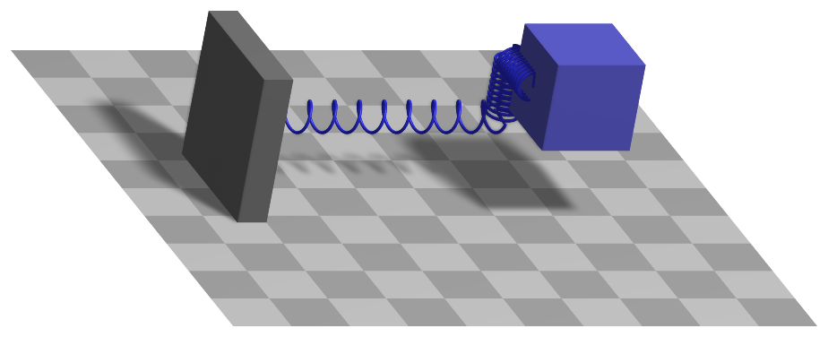

ObjectConnectorCartesianSpringDamper
An 3D spring-damper element, providing springs and dampers in three (global) directions (x,y,z); the connector can be attached to position-based markers.


Simpler: mbs.CreateCartesianSpringDamper adds this item, with what it needs, in one call.
Interface
Python names:
ObjectConnectorCartesianSpringDamperorCartesianSpringDamper, andVCartesianSpringDamperfor its visualizationMarkers it acts on: those providing
Position: MarkerBodyPosition, MarkerBodyRigid, MarkerNodePosition, MarkerNodeRigid, MarkerSuperElementPosition, MarkerSuperElementRigid, MarkerKinematicTreeRigid
Parameters
The parameters of the item; in a dictionary, its type is ‘ConnectorCartesianSpringDamper’:
name |
type |
size |
default |
description |
|---|---|---|---|---|
name |
String |
‘’ |
connector’s unique name |
|
markerNumbers |
ArrayMarkerIndex |
[ invalid (-1), invalid (-1) ] |
(symbol: \([m0,m1]\tp\)) list of markers used in connector |
|
stiffness |
Vector3D |
3 |
[0.,0.,0.] |
(symbol: \(\kv\)) stiffness [SI:N/m] of springs; act against relative displacements in 0, 1, and 2-direction |
damping |
Vector3D |
3 |
[0.,0.,0.] |
(symbol: \(\dv\)) damping [SI:N/(m s)] of dampers; act against relative velocities in 0, 1, and 2-direction |
offset |
Vector3D |
3 |
[0.,0.,0.] |
(symbol: \(\vv_{\mathrm{off}}\)) offset between two springs |
springForceUserFunction |
ObjectConnectorCartesianSpringDamperSpringForceUserFunction |
0 |
(symbol: \(\mathrm{UF} \in \Rcal^3\)) A Python function which computes the 3D force vector between the two marker points, if activeConnector=True; see description below |
|
activeConnector |
Bool |
True |
flag, which determines, if the connector is active; used to deactivate (temporarily) a connector or constraint |
|
visualization |
VObjectConnectorCartesianSpringDamper |
parameters for visualization of item |
Visualization parameters
The parameters of VObjectConnectorCartesianSpringDamper, given as visualization:
name |
type |
size |
default |
description |
|---|---|---|---|---|
show |
Bool |
True |
set true, if item is shown in visualization and false if it is not shown |
|
drawSize |
float |
-1. |
drawing size = diameter of spring; size == -1.f means that default connector size is used |
|
color |
Float4 |
4 |
[-1.,-1.,-1.,-1.] |
RGBA connector color; if R==-1, use default color |
Drawing
Drawn as all connectors; three springs of diameter drawSize, along x, y and z from marker 0 to marker 1, drawn as the spring of ObjectConnectorSpringDamper.
Settings beyond those of all connectors: connectors.curveTiling, connectors.drawSimplified, connectors.springNumberOfWindings, general.cylinderTiling.
Output variables
Available as OutputVariableType in sensors, Get...Output() and other functions:
output variable |
symbol |
description |
|---|---|---|
Displacement |
\(\Delta\! \LU{0}{\pv} = \LU{0}{\pv}_{m1} - \LU{0}{\pv}_{m0}\) |
relative displacement in global coordinates |
Distance |
\(L=\vert \Delta\! \LU{0}{\pv}\vert \) |
scalar distance between both marker points |
Velocity |
\(\Delta\! \LU{0}{\vv} = \LU{0}{\vv}_{m1} - \LU{0}{\vv}_{m0}\) |
relative translational velocity in global coordinates |
Force |
\(\fv_{SD}\) |
joint force in global coordinates, see equations |
PotentialEnergy |
\(V = \frac{1}{2} \sum_i k_i\, (\Delta p_i - v_{\mathrm{off},i})^2\) |
elastic energy of the three springs; zero if the connector is not active; raises for a springForceUserFunction |
Detailed description
Definition of quantities
intermediate variables |
symbol |
description |
|---|---|---|
marker m0 position |
\(\LU{0}{\pv}_{m0}\) |
current global position which is provided by marker m0 |
marker m1 position |
\(\LU{0}{\pv}_{m1}\) |
|
marker m0 velocity |
\(\LU{0}{\vv}_{m0}\) |
current global velocity which is provided by marker m0 |
marker m1 velocity |
\(\LU{0}{\vv}_{m1}\) |
Connector forces
Connector forces are based on relative displacements and relative veolocities in global coordinates. Relative displacement between marker m0 to marker m1 positions is given by
and relative velocity reads
If activeConnector = True, the spring force vector is computed as
If the springForceUserFunction \(\mathrm{UF}\) is defined, \(\fv_{SD}\) instead becomes (\(t\) is current time)
and iN represents the itemNumber (=objectNumber).
If activeConnector = False, \(\fv_{SD}\) is set to zero.
The force \(\fv_{SD}\) acts via the markers’ position jacobians \(\Jm_{pos,m0}\) and \(\Jm_{pos,m1}\). The generalized forces added to the LHS equations read for marker \(m0\),
and for marker \(m1\),
The LHS equation parts are added accordingly using the LTG mapping. Note that the different signs result from the signs in (73).
The connector also provides an analytic jacobian, which is used if newton.numericalDifferentiation.forODE2 = False
and if there is no springForceUserFunction (otherwise numerical differentiation is used).
The anayltic jacobian for the coupled equation parts \(\fv_{LHS,m0}\) and \(\fv_{LHS,m1}\) is based on the local jacobians
Here, \(f_{ODE2}\) is the factor for the position derivative and \(f_{ODE2_t}\) is the factor for the velocity derivative, which allows a computation of the computation for both the position as well as the velocity part at the same time.
The complete jacobian for the LHS equations then reads,
Here, \(\qv_{m0}\) are the coordinates associated with marker \(m0\) and \(\qv_{m1}\) of marker \(m1\).
The second term \(\Jm_{CSD'}\) is only non-zero if \(\frac{\partial \LU{0}{\Jm_{pos,i}\tp}}{\partial \qv_{i}}\) is non-zero, using \(i \in \{m0, \, m1\}\). As the latter terms would require to compute a 3-dimensional array, the second jacobian term is computed as
in which we set \(\fv' = \LU{0}{\fv_{SD}}\), but the derivatives in (74) are evaluated by setting \(\fv' = const\).
Userfunction: springForceUserFunction(mbs, t, itemNumber, displacement, velocity, stiffness, damping, offset)
A user function, which computes the 3D spring force vector depending on time, object variables (deltaL, deltaL_t) and object parameters
(stiffness, damping, force).
The object variables are provided to the function using the current values of the SpringDamper object.
Note that itemNumber represents the index of the object in mbs, which can be used to retrieve additional data from the object through
mbs.GetObjectParameter(itemNumber, ...), see the according description of GetObjectParameter.
arguments / return |
type or size |
description |
|---|---|---|
|
MainSystem |
provides MainSystem mbs in which underlying item is defined |
|
Real |
current time in mbs |
|
Index |
integer number \(i_N\) of the object in mbs, allowing easy access to all object data via mbs.GetObjectParameter(itemNumber, …) |
|
Vector3D |
\(\Delta\! \LU{0}{\pv}\) |
|
Vector3D |
\(\Delta\! \LU{0}{\vv}\) |
|
Vector3D |
copied from object |
|
Vector3D |
copied from object |
|
Vector3D |
copied from object |
return value |
Vector3D |
list or numpy array of computed spring force |
Example:
#define simple force for spring-damper:
def UFforce(mbs, t, itemNumber, u, v, k, d, offset):
return [u[0]*k[0],u[1]*k[1],u[2]*k[2]]
#markerNumbers and parameters taken from mini example
mbs.AddObject(CartesianSpringDamper(markerNumbers = [mGround, mMass],
stiffness = [k,k,k],
damping = [0,k*0.05,0], offset = [0,0,0],
springForceUserFunction = UFforce))
Mini example
#example with mass at [1,1,0], 5kg under load 5N in -y direction
k=5000
nMass = mbs.AddNode(NodePoint(referenceCoordinates=[1,1,0]))
oMass = mbs.AddObject(MassPoint(mass = 5, nodeNumber = nMass))
mMass = mbs.AddMarker(MarkerNodePosition(nodeNumber=nMass))
mGround = mbs.AddMarker(MarkerBodyPosition(bodyNumber=oGround, localPosition = [1,1,0]))
mbs.AddObject(CartesianSpringDamper(markerNumbers = [mGround, mMass],
stiffness = [k,k,k],
damping = [0,k*0.05,0], offset = [0,0,0]))
mbs.AddLoad(Force(markerNumber = mMass, loadVector = [0, -5, 0])) #static solution=-5/5000=-0.001m
#assemble and solve system for default parameters
mbs.Assemble()
mbs.SolveDynamic()
#check result at default integration time
exu.sys['testResult'] = mbs.GetNodeOutput(nMass, exu.OutputVariableType.Displacement)[1]
Examples (Ex) and TestModels (TM) that show this item, with weblink to github: cartesianSpringDamper.py (Ex), CartesianSpringDamperTest.py (TM), sphericalJointTest.py (TM)